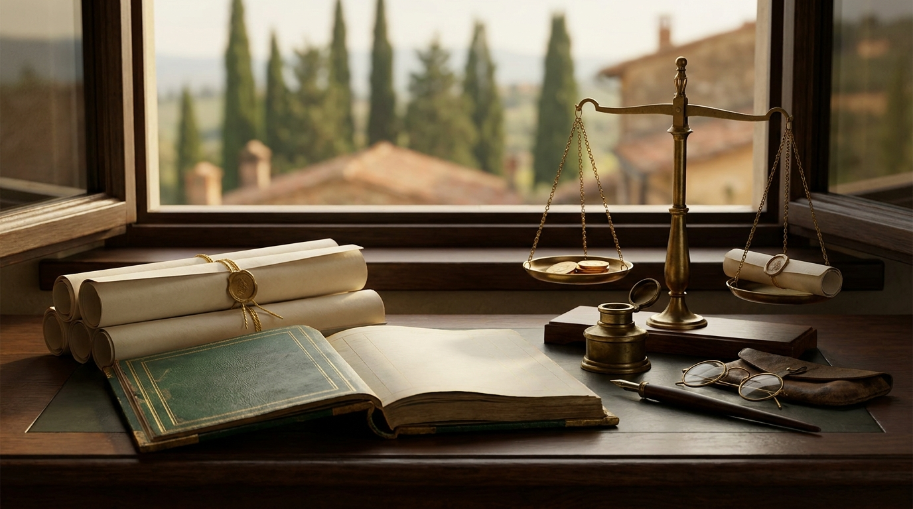

Compensi degli avvocati legati al risultato: cosa cambia con la riforma forense
Il disegno di legge delega sull'ordinamento forense ridisegna le regole sui compensi degli avvocati: si apre la strada a parcelle parametrate al risultato del caso e si introducono meccanismi di solidarietà passiva. Cambiano gli equilibri contrattuali tra professionista e cliente, con limiti specifici per gli incarichi con grandi committenti come banche, assicurazioni e imprese strutturate.

Il contesto della riforma
Il ddl delega sull'ordinamento forense interviene su un terreno storicamente delicato: la determinazione del compenso dell'avvocato. La novità di maggiore impatto riguarda la possibilità di legare la parcella all'esito della prestazione, secondo schemi che fino a oggi conoscevano limiti più rigidi.
La delega coinvolge il Ministero della Giustizia nell'attuazione e tiene conto delle osservazioni dell'Autorità Garante della Concorrenza e del Mercato, da tempo critica verso vincoli tariffari ritenuti distorsivi della concorrenza tra professionisti.
Inquadramento normativo
Il quadro attuale è fissato dall'art. 13 della legge 31 dicembre 2012, n. 247 (legge professionale forense). Il comma 4 consente di pattuire il compenso a tempo, in misura forfetaria, per fasi o per scaglioni, oppure in percentuale sul valore dell'affare. Il comma 4 vieta espressamente il cosiddetto patto di quota lite, cioè l'accordo che attribuisce all'avvocato una quota del bene oggetto della lite (il patto vietato dal divieto risalente all'art. 2233, comma 3, del codice civile).
La distinzione tecnica è netta. Una cosa è il palmario, ossia il compenso aggiuntivo riconosciuto in caso di esito favorevole, ammesso entro limiti di proporzionalità. Altra cosa è il patto di quota lite, che trasforma l'avvocato in cointeressato all'esito e oggi resta vietato. La riforma agisce proprio su questo confine, ampliando lo spazio per pattuizioni legate al risultato e introducendo, accanto a esse, forme di solidarietà passiva tra più professionisti incaricati.
Implicazioni pratiche
Per il cliente cambia la logica del preventivo. Una parcella parametrata al risultato sposta parte del rischio economico sul professionista, ma può tradursi in un costo finale più elevato in caso di successo. Occorre quindi valutare il rapporto tra compenso fisso garantito e componente premiale.
Per gli incarichi con grandi committenti - banche, assicurazioni, imprese strutturate - la delega prevede limiti specifici. La ratio è evitare che la maggiore forza contrattuale del cliente comprima oltre misura il compenso, a tutela della dignità della prestazione e della concorrenza leale.
La solidarietà passiva merita attenzione. Quando più avvocati assumono congiuntamente un incarico, ciascuno può rispondere dell'intera obbligazione verso il cliente. Significa che il rapporto interno tra i professionisti va regolato con chiarezza, per evitare che uno sopporti conseguenze sproporzionate rispetto al proprio apporto.
Cosa cambia per il destinatario tipo
L'impresa che affida un contenzioso o un'operazione complessa dovrà negoziare con maggiore consapevolezza la struttura del compenso. Il professionista, dal canto suo, dovrà redigere mandati più articolati, distinguendo con precisione componente fissa, componente premiale e ripartizione del rischio.
Nel frattempo, fino all'emanazione dei decreti delegati attuativi, restano in vigore le regole vigenti. La delega indica i principi; la disciplina operativa dipenderà dai testi attuativi e dai relativi parametri.
Cosa fare in concreto
- Verificate i mandati in corso: controllate se contengono clausole sul compenso premiale e se sono coerenti con il divieto tuttora vigente di patto di quota lite.
- Distinguete sempre palmario e quota lite: il primo è un compenso aggiuntivo proporzionato, il secondo resta vietato. La formulazione contrattuale fa la differenza.
- Negoziate per iscritto la struttura del compenso: definite parte fissa, soglia di attivazione della componente premiale e criteri di calcolo, evitando rinvii generici.
- Regolate i rapporti tra coincaricati: in presenza di più professionisti, prevedete clausole interne di ripartizione, in vista della solidarietà passiva.
- Monitorate i decreti attuativi: la portata effettiva della riforma dipenderà dai testi delegati. Consigliamo di rivedere la modulistica contrattuale appena saranno pubblicati.
Conclusione
La riforma muove verso un sistema più flessibile, in linea con le sollecitazioni dell'Antitrust, ma introduce variabili di rischio nuove per entrambe le parti del rapporto. La chiarezza redazionale del mandato resta lo strumento principale per evitare contenziosi sui compensi.
---
*Contributo informativo a cura di Tamburro & Partners - Avv. Giuseppe Tamburro. Non costituisce parere legale.*
Ogni contratto ha il suo equilibrio.
Se vuoi una revisione delle clausole o una redazione su misura, scrivi allo studio. Ti rispondiamo entro un giorno lavorativo.